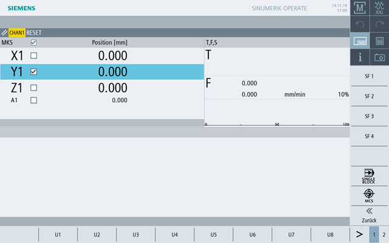

Sie wählen bestimmte Tasten der Maschinensteuertafel, die über die Software nachgebildet sind, durch Touchbedienung der entsprechenden Softkeys.
Die Beschreibung der einzelnen Tasten entnehmen Sie dem Kapitel "Bedienelemente der Maschinensteuertafel".
| Hinweis |
|
PLC-Nahtstellensignale, die über die Softkeys des Maschinensteuertafel-Menüs ausgelöst werden, sind flankengesteuert. |
Ein- und Ausblenden
Mit der Anwendermenü-Taste "U" werden die CPF-Softkey-Leiste (vertikale Softkey-Leiste) und die Anwendersoftkey-Leiste (horizontale Softkey-Leiste) eingeblendet.
Über die Menüfortschalt-Taste erweitern Sie die horizontale Anwendersoftkey-Leiste. Damit stehen weitere Softkeys zur Verfügung.
Softkeys des Maschinensteuertafel-Menüs
Folgende Softkeys sind verfügbar:
SF1- SF4, U1- 8 | Kundentasten, sprachabhängige Beschriftung möglich |
Softkey "WKS MKS" | Zwischen WKS und MKS umschalten |
Softkey "Single Block" | Einzelsatz-Bearbeitung ein-/ausschalten |
| Hinweis |
Bei Bereichswechsel mit der Taste <MENU SELECT> wird das Fenster automatisch ausgeblendet. |
Achsanwahl
Sie wählen eine Achse im Istwerte-Fenster, indem Sie in der Überschriftzeile des Istwerte-Fensters das Kontrollkästchen aktivieren.
Durch Antippen des Kontrolkästchens wird für jede Achse, die zur Achsanwahl freigegeben ist, ein Kontrolkästchen neben dem Achsnamen angezeigt.
| | Maschinenhersteller Beachten Sie hierzu die Angaben des Maschinenherstellers. |
Sie wählen eine Achse an, indem Sie das entsprechende Kontrollkästchen aktivieren.
| Hinweis |
Um eine Achse dem Handrad zuzuordnen, aktivieren Sie das Handrad über das Bedienelement "Handrad" der Touchbedienung und wählen anschließend die jeweilige Achse über das Kontrollkästchen an. |
| Hinweis |
Orientierungsachsen können dem Handrad nicht zugeordnet werden. |
Anschließend verfahren Sie die Achsen über die Bedienelemente um feste Schrittweite.